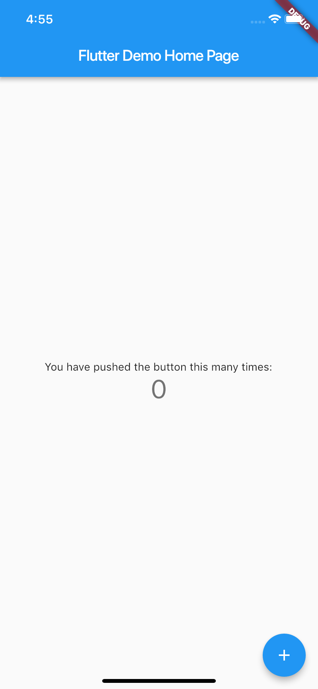
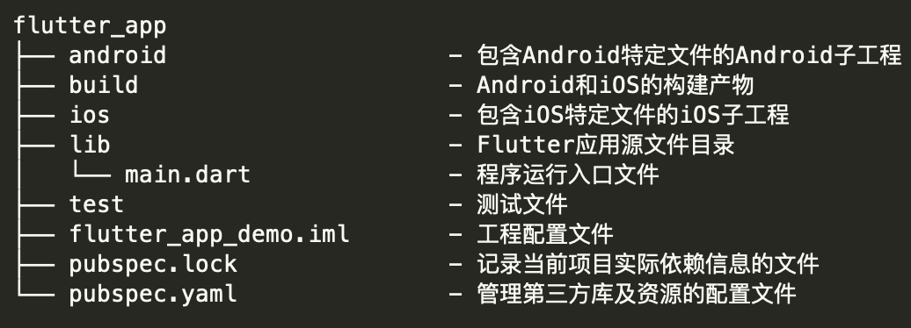
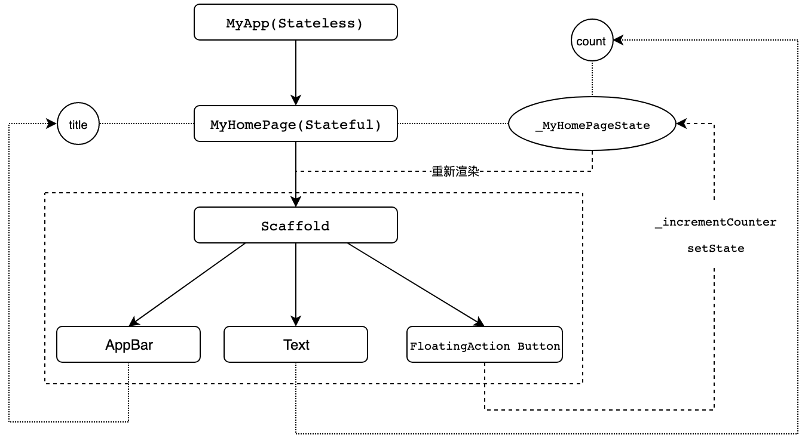

- 00 开篇词 为什么每一位大前端从业者都应该学习Flutter？.md.html
- 01 预习篇 · 从0开始搭建Flutter工程环境.md.html
- 02 预习篇 · Dart语言概览.md.html
- 03 深入理解跨平台方案的历史发展逻辑.md.html
- 04 Flutter区别于其他方案的关键技术是什么？.md.html
- 05 从标准模板入手，体会Flutter代码是如何运行在原生系统上的.md.html
- 06 基础语法与类型变量：Dart是如何表示信息的？.md.html
- 07 函数、类与运算符：Dart是如何处理信息的？.md.html
- 08 综合案例：掌握Dart核心特性.md.html
- 09 Widget，构建Flutter界面的基石.md.html
- 10 Widget中的State到底是什么？.md.html
- 11 提到生命周期，我们是在说什么？.md.html
- 12 经典控件（一）：文本、图片和按钮在Flutter中怎么用？.md.html
- 13 经典控件（二）：UITableView_ListView在Flutter中是什么？.md.html
- 14 经典布局：如何定义子控件在父容器中排版的位置？.md.html
- 15 组合与自绘，我该选用何种方式自定义Widget？.md.html
- 16 从夜间模式说起，如何定制不同风格的App主题？.md.html
- 17 依赖管理（一）：图片、配置和字体在Flutter中怎么用？.md.html
- 18 依赖管理（二）：第三方组件库在Flutter中要如何管理？.md.html
- 19 用户交互事件该如何响应？.md.html
- 20 关于跨组件传递数据，你只需要记住这三招.md.html
- 21 路由与导航，Flutter是这样实现页面切换的.md.html
- 22 如何构造炫酷的动画效果？.md.html
- 23 单线程模型怎么保证UI运行流畅？.md.html
- 24 HTTP网络编程与JSON解析.md.html
- 25 本地存储与数据库的使用和优化.md.html
- 26 如何在Dart层兼容Android_iOS平台特定实现？（一）.md.html
- 27 如何在Dart层兼容Android_iOS平台特定实现？（二）.md.html
- 28 如何在原生应用中混编Flutter工程？.md.html
- 29 混合开发，该用何种方案管理导航栈？.md.html
- 30 为什么需要做状态管理，怎么做？.md.html
- 31 如何实现原生推送能力？.md.html
- 32 适配国际化，除了多语言我们还需要注意什么_.md.html
- 33 如何适配不同分辨率的手机屏幕？.md.html
- 34 如何理解Flutter的编译模式？.md.html
- 35 Hot Reload是怎么做到的？.md.html
- 36 如何通过工具链优化开发调试效率？.md.html
- 37 如何检测并优化Flutter App的整体性能表现？.md.html
- 38 如何通过自动化测试提高交付质量？.md.html
- 39 线上出现问题，该如何做好异常捕获与信息采集？.md.html
- 40 衡量Flutter App线上质量，我们需要关注这三个指标.md.html
- 41 组件化和平台化，该如何组织合理稳定的Flutter工程结构？.md.html
- 42 如何构建高效的Flutter App打包发布环境？.md.html
- 43 如何构建自己的Flutter混合开发框架（一）？.md.html
- 44 如何构建自己的Flutter混合开发框架（二）？.md.html
- 特别放送 温故而知新，与你说说专栏的那些思考题.md.html
- 结束语 勿畏难，勿轻略.md.html
- 捐赠
05 从标准模板入手，体会Flutter代码是如何运行在原生系统上的
你好，我是陈航。
在专栏的第一篇预习文章中，我和你一起搭建了Flutter的开发环境，并且通过自带的hello_world示例，和你演示了Flutter项目是如何运行在Android和iOS模拟器以及真机上的。
今天，我会通过Android Studio创建的Flutter应用模板，带你去了解Flutter的项目结构，分析Flutter工程与原生Android和iOS工程有哪些联系，体验一个有着基本功能的Flutter应用是如何运转的，从而加深你对构建Flutter应用的关键概念和技术的理解。
如果你现在还不熟悉Dart语言也不用担心，只要能够理解基本的编程概念（比如，类型、变量、函数和面向对象），并具备一定的前端基础（比如，了解View是什么、页面基本布局等基础知识），就可以和我一起完成今天的学习。而关于Dart语言基础概念的讲述、案例分析，我会在下一个模块和你展开。
计数器示例工程分析
首先，我们打开Android Studio，创建一个Flutter工程应用flutter_app。Flutter会根据自带的应用模板，自动生成一个简单的计数器示例应用Demo。我们先运行此示例，效果如下：

图1 计数器示例运行效果
每点击一次右下角带“+”号的悬浮按钮，就可以看到屏幕中央的数字随之+1。
工程结构
在体会了示例工程的运行效果之后，我们再来看看Flutter工程目录结构，了解Flutter工程与原生Android和iOS工程之间的关系，以及这些关系是如何确保一个Flutter程序可以最终运行在Android和iOS系统上的。

图2 Flutter工程目录结构
可以看到，除了Flutter本身的代码、资源、依赖和配置之外，Flutter工程还包含了Android和iOS的工程目录。
这也不难理解，因为Flutter虽然是跨平台开发方案，但却需要一个容器最终运行到Android和iOS平台上，所以Flutter工程实际上就是一个同时内嵌了Android和iOS原生子工程的父工程：我们在lib目录下进行Flutter代码的开发，而某些特殊场景下的原生功能，则在对应的Android和iOS工程中提供相应的代码实现，供对应的Flutter代码引用。
Flutter会将相关的依赖和构建产物注入这两个子工程，最终集成到各自的项目中。而我们开发的Flutter代码，最终则会以原生工程的形式运行。
工程代码
在对Flutter的工程结构有了初步印象之后，我们就可以开始学习Flutter的项目代码了。
Flutter自带的应用模板，也就是这个计数器示例，对初学者来说是一个极好的入门范例。在这个简单示例中，从基础的组件、布局到手势的监听，再到状态的改变，Flutter最核心的思想在这60余行代码中展现得可谓淋漓尽致。
为了便于你学习理解，领会构建Flutter程序的大体思路与关键技术，而不是在一开始时就陷入组件的API细节中，我删掉了与核心流程无关的组件配置代码及布局逻辑，在不影响示例功能的情况下对代码进行了改写，并将其分为两部分：
- 第一部分是应用入口、应用结构以及页面结构，可以帮助你理解构建Flutter程序的基本结构和套路；
- 第二部分则是页面布局、交互逻辑及状态管理，能够帮你理解Flutter页面是如何构建、如何响应交互，以及如何更新的。
首先，我们来看看第一部分的代码，也就是应用的整体结构：
import 'package:flutter/material.dart';
void main() => runApp(MyApp());
class MyApp extends StatelessWidget {
@override
Widget build(BuildContext context) => MaterialApp(home: MyHomePage(title: 'Flutter Demo Home Page'));
}
class MyHomePage extends StatefulWidget {
MyHomePage({Key key, this.title}) : super(key: key);
final String title;
@override
_MyHomePageState createState() => _MyHomePageState();
}
class _MyHomePageState extends State<MyHomePage> {
Widget build(BuildContext context) => {...};
}
在本例中，Flutter应用为MyApp类的一个实例，而MyApp类继承自StatelessWidget类，这也就意味着应用本身也是一个Widget。事实上，在Flutter中，Widget是整个视图描述的基础，在Flutter的世界里，包括应用、视图、视图控制器、布局等在内的概念，都建立在Widget之上，Flutter的核心设计思想便是一切皆Widget。
Widget是组件视觉效果的封装，是UI界面的载体，因此我们还需要为它提供一个方法，来告诉Flutter框架如何构建UI界面，这个方法就是build。
在build方法中，我们通常通过对基础Widget进行相应的UI配置，或是组合各类基础Widget的方式进行UI的定制化。比如在MyApp中，我通过MaterialApp这个Flutter App框架设置了应用首页，即MyHomePage。当然，MaterialApp也是一个Widget。
MaterialApp类是对构建material设计风格应用的组件封装框架，里面还有很多可配置的属性，比如应用主题、应用名称、语言标识符、组件路由等。但是，这些配置属性并不是本次分享的重点，如果你感兴趣的话，可以参考Flutter官方的API文档，来了解MaterialApp框架的其他配置能力。
MyHomePage是应用的首页，继承自StatefulWidget类。这，代表着它是一个有状态的Widget（Stateful Widget），而_MyHomePageState就是它的状态。
如果你足够细心的话就会发现，虽然MyHomePage类也是Widget，但与MyApp类不同的是，它并没有一个build方法去返回Widget，而是多了一个createState方法返回_MyHomePageState对象，而build方法则包含在这个_MyHomePageState类当中。
那么，StatefulWidget与StatelessWidget的接口设计，为什么会有这样的区别呢？
这是因为Widget需要依据数据才能完成构建，而对于StatefulWidget来说，其依赖的数据在Widget生命周期中可能会频繁地发生变化。由State创建Widget，以数据驱动视图更新，而不是直接操作UI更新视觉属性，代码表达可以更精炼，逻辑也可以更清晰。
在了解了计数器示例程序的整体结构以后，我们再来看看这个示例代码的第二部分，也就是页面布局及交互逻辑部分。
class _MyHomePageState extends State<MyHomePage> {
int _counter = 0;
void _incrementCounter() => setState(() {_counter++;});
@override
Widget build(BuildContext context) {
return Scaffold(
appBar: AppBar(title: Text(Widget.title)),
body: Text('You have pushed the button this many times:$_counter')),
floatingActionButton: FloatingActionButton(onPressed: _incrementCounter)
);
}
_MyHomePageState中创建的Widget Scaffold，是Material库中提供的页面布局结构，它包含AppBar、Body，以及FloatingActionButton。
- AppBar是页面的导航栏，我们直接将MyHomePage中的title属性作为标题使用。
- body则是一个Text组件，显示了一个根据_counter属性可变的文本：‘You have pushed the button this many times:$_counter’。
- floatingActionButton，则是页面右下角的带“+”的悬浮按钮。我们将_incrementCounter作为其点击处理函数。
_incrementCounter的实现很简单，使用setState方法去自增状态属性_counter。setState方法是Flutter以数据驱动视图更新的关键函数，它会通知Flutter框架：我这儿有状态发生了改变，赶紧给我刷新界面吧。而Flutter框架收到通知后，会执行Widget的build方法，根据新的状态重新构建界面。
这里需要注意的是：状态的更改一定要配合使用setState。通过这个方法的调用，Flutter会在底层标记Widget的状态，随后触发重建。于我们的示例而言，即使你修改了_counter，如果不调用setState，Flutter框架也不会感知到状态的变化，因此界面上也不会有任何改变（你可以动手验证一下）。
下面的图3，就是整个计数器示例的代码流程示意图。通过这张图，你就能够把这个实例的整个代码流程串起来了：

图3 代码流程示意图
MyApp为Flutter应用的运行实例，通过在main函数中调用runApp函数实现程序的入口。而应用的首页则为MyHomePage，一个拥有_MyHomePageState状态的StatefulWidget。_MyHomePageState通过调用build方法，以相应的数据配置完成了包括导航栏、文本及按钮的页面视图的创建。
而当按钮被点击之后，其关联的控件函数_incrementCounter会触发调用。在这个函数中，通过调用setState方法，更新_counter属性的同时，也会通知Flutter框架其状态发生变化。随后，Flutter会重新调用build方法，以新的数据配置重新构建_MyHomePageState的UI，最终完成页面的重新渲染。
Widget只是视图的“配置信息”，是数据的映射，是“只读”的。对于StatefulWidget而言，当数据改变的时候，我们需要重新创建Widget去更新界面，这也就意味着Widget的创建销毁会非常频繁。
为此，Flutter对这个机制做了优化，其框架内部会通过一个中间层去收敛上层UI配置对底层真实渲染的改动，从而最大程度降低对真实渲染视图的修改，提高渲染效率，而不是上层UI配置变了就需要销毁整个渲染视图树重建。
这样一来，Widget仅是一个轻量级的数据配置存储结构，它的重新创建速度非常快，所以我们可以放心地重新构建任何需要更新的视图，而无需分别修改各个子Widget的特定样式。关于Widget具体的渲染过程细节，我会在后续的第9篇文章“Widget，构建Flutter界面的基石”中向你详细介绍，在这里就不再展开了。
总结
今天的这次Flutter项目初体验，我们就先进行到这里。接下来，我们一起回顾下涉及到的知识点。
首先，我们通过Flutter标准模板创建了计数器示例，并分析了Flutter的项目结构，以及Flutter工程与原生Android、iOS工程的联系，知道了Flutter代码是怎么运行在原生系统上的。
然后，我带你学习了示例项目代码，了解了Flutter应用结构及页面结构，并认识了构建Flutter的基础，也就是Widget，以及状态管理机制，知道了Flutter页面是如何构建的，StatelessWidget与StatefulWidget的区别，以及如何通过State的成员函数setState以数据驱动的方式更新状态，从而更新页面。
有原生Android和iOS框架开发经验的同学，可能更习惯命令式的UI编程风格：手动创建UI组件，在需要更改UI时调用其方法修改视觉属性。而Flutter采用声明式UI设计，我们只需要描述当前的UI状态（即State）即可，不同UI状态的视觉变更由Flutter在底层完成。
虽然命令式的UI编程风格更直观，但声明式UI编程方式的好处是，可以让我们把复杂的视图操作细节交给框架去完成，这样一来不仅可以提高我们的效率，也可以让我们专注于整个应用和页面的结构和功能。
所以在这里，我非常希望你能够适应这样的UI编程思维方式的转换。
思考题
最后，我给你留下一个思考题吧。
示例项目代码在_MyHomePageState类中，直接在build函数里以内联的方式完成了Scaffold页面元素的构建，这样做的好处是什么呢？
在实现同样功能的情况下，如果将Scaffold页面元素的构建封装成一个新Widget类，我们该如何处理？
欢迎你在评论区给我留言分享你的观点，我会在下一篇文章中等待你！感谢你的收听，也欢迎你把这篇文章分享给更多的朋友一起阅读。
© 2019 - 2023 Liangliang Lee. Powered by gin and hexo-theme-book.